Beyond the Basics — Why a Deep Dive Matters
The first volume of this series taught you the building blocks of React: components, props, state, events, and lists. You learned how to compose UIs from small pieces and how to keep data and the screen in sync. That foundation is enough to ship a working app — but it is not enough to ship a maintainable one. As soon as your component tree grows past a handful of files, you start hitting questions that the basics do not answer.
Should this state live in the child that displays it, or in the parent that owns the data flow?
Why does the input box lose focus, or why does the same click handler fire with stale data?
When two siblings need the same data, who owns it? Should you store a derived value, or compute
it on every render? Why does wrapping a list in a <div> break your CSS grid
layout? These are not edge cases — they are the everyday questions that separate a React
beginner from a React engineer.
This deep-dive volume answers those questions by walking through 18 production-grade patterns that experienced React developers reach for daily. Each chapter takes one specific problem, explains the underlying mechanism, shows the wrong way (and why it fails), and then shows the right way with code you can paste into your project. The chapters are grouped into four thematic parts so you can read sequentially or jump to the pattern you need right now.
What you will be able to build after this guide
By the end of this volume you will be able to design flexible wrapper components that forward
arbitrary props, build reusable layout primitives with multiple named slots, dynamically
switch the HTML element a component renders, manage complex nested state immutably, share
state across distant siblings without prop-drilling pain, and — most importantly — recognise
when you are storing state you should be deriving instead. These are the patterns that turn
a 3000-line App.js into a clean, testable, and reusable component tree.
JSX & Component Composition
The first part of this guide focuses on the mechanics of writing components — how JSX constrains you, how to split a giant component into focused pieces, and how to build wrapper primitives that feel as natural as native HTML elements. Master these patterns first, because every advanced state-management topic in Parts III and IV assumes you can compose components cleanly.
JSX One-Root Rule & React Fragments
The one-parent constraint
JSX looks like HTML, but it is syntactic sugar over the React.createElement()
function call. A function in JavaScript can only return one value, so a JSX expression can
only return one root element. The following looks innocent and HTML-like, but it is invalid
JSX:
The compiler tries to translate this into return createElement('h1', ...) createElement('p', ...)
— which is two function calls with no wrapper, and JavaScript parses this as a syntax error.
You have two ways to satisfy the one-root rule, and they have very different consequences for
your DOM tree.
Option A — Wrap in a real DOM element
The naive fix is to wrap the siblings in a <div> or <section>.
This compiles and renders fine, but it adds an extra node to the DOM tree.
That extra node is invisible to your React code but very visible to your CSS: it breaks
display: flex parents (the wrapper becomes a flex item instead of its children),
it breaks :nth-child selectors, it breaks CSS Grid layout flows, and it inflates
the document size for no benefit.
Option B — Wrap in a React Fragment
A React Fragment is a special invisible node that groups children for JSX purposes but emits
no DOM node. The DOM tree stays clean — the <h1> and
<p> become direct children of whatever parent renders this component, exactly
as if the wrapper did not exist. There are two syntaxes for fragments:
<>...</> shorthand accepts no attributes. If you
are rendering a list of fragments (e.g. inside .map()) you must pass a
key — and you can only do that with the explicit
<Fragment key={...}> form. The shorthand will throw a syntax error.
Reference diagram
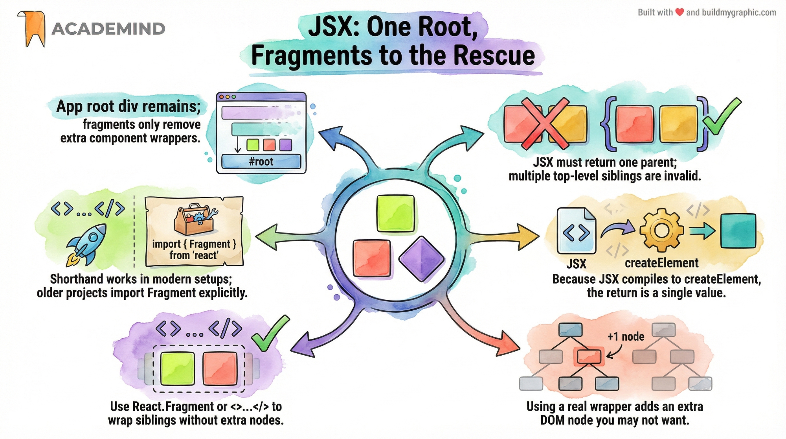
Real project: a list of definitions
A common case where fragments shine: rendering a definition list where each entry produces
a <dt> and a <dd>. These must be direct children of
<dl>; wrapping each pair in a <div> is invalid HTML
and breaks screen readers. Fragments save the day:
<div> when you genuinely
need a styling or layout wrapper. If you catch yourself writing <div className="wrapper">
just to satisfy JSX, replace it with <>.
Identifying Component Split-Up Potential
When should you split a component?
Beginners tend to write one giant App component that handles data, state, events,
and rendering for the entire screen. It works, but it does not scale. As the component grows,
every state update re-runs the entire render function — including the parts that have nothing
to do with the data that changed. Worse, the file becomes impossible to navigate, hard to
test, and resistant to reuse.
The single-responsibility principle from software engineering applies cleanly to React: a component should do one thing. If you can describe what a component does in one short sentence and that sentence contains the word "and", you have a split candidate. "Renders the header and the player list and the chat input" is three components pretending to be one.
Four signals that a component needs splitting
- Multiple distinct visual sections. A page that has a header, a sidebar, a main panel, and a footer is four components, not one. Each section can be reasoned about, styled, and tested independently.
- Unrelated state living together. If your component holds the chat input
text and the game board state in the same
useStatecluster, those two concerns want to live in different components. - A render function longer than ~80 lines. This is a heuristic, not a rule, but it correlates strongly with "doing too much". Long render functions are hard to scan, hard to test, and re-render unnecessarily often.
- Repeated JSX blocks. If you find yourself copying and pasting a card markup block, that block wants to be its own component. Reuse beats repetition.
Keep state close to where it is used
A common mistake after splitting is leaving all state in the parent "because that's where it was before". This defeats the purpose. State should live in the lowest common ancestor of all components that need it — no higher. If only the chat input needs the draft text, the chat input owns it. If the board and the log both need the move list, the shared parent owns it. Misplaced state causes unrelated sections to update on every keystroke.
Reference diagram
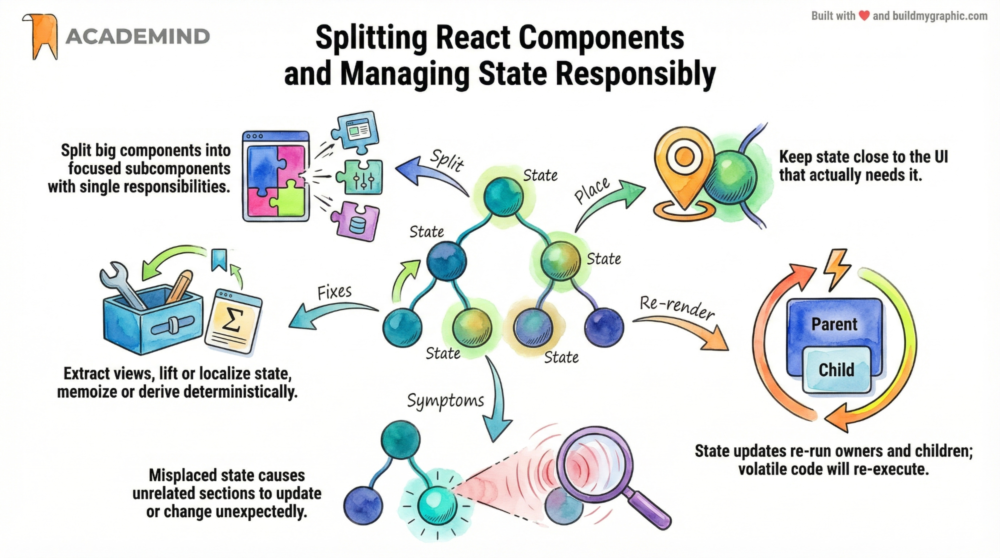
A worked example: from one App to four components
Imagine a typical dashboard page. The monolithic version is one 200-line component that manages the user's name, the active tab, the data fetching, and the modal visibility. After applying the split-up pattern, the structure becomes:
| Component | Responsibility | Owns state? |
|---|---|---|
<App> | Layout, routing | active tab only |
<Header> | User info, logout button | none (props) |
<Sidebar> | Navigation | none (props) |
<DashboardPanel> | Charts, data fetching | data, loading, error |
<SettingsModal> | Form, validation | form fields |
Each component now fits on a single screen, has a clear purpose, and only re-renders when its
own state (or its direct props) changes. The SettingsModal can re-render on every
keystroke without forcing the charts to refetch — that is the entire point of the split.
Splitting Components by Feature and State
A five-step recipe for decomposition
Once you have identified that a component is too big (Chapter 2), you need a deterministic process for splitting it. The Academind tutorial this guide accompanies teaches a five-step recipe that works for almost any monolithic component. The key idea is to split by feature (a logical slice of the UI), not by layer (all state in one file, all markup in another). Feature-based splits keep related code together so you can change a feature without touching ten files.
Step 1 — Extract distinct UI sections
Look at your render output and identify the visually distinct sections: header, sidebar, main panel, footer, list, form. Each one becomes its own component file. At this step you only move JSX — no logic yet. The goal is a 1-to-1 mapping between visual sections and files.
Step 2 — Import only what each feature needs
Move data imports and child component imports into the file that actually uses them. If
CoreConcepts needs the CORE_CONCEPTS array, that import belongs in
CoreConcepts.jsx — not in App.jsx. The result is that each file
declares its own dependencies explicitly, which makes the dependency graph easy to reason
about and tree-shake.
Step 3 — Move state and handlers into the feature component
This is the step most beginners skip, and it is the one that matters most. After extracting
the JSX, the useState and the event handlers that were sitting in
App.jsx usually belong inside the new feature component. If the
Examples component is the only place that uses the selectedTopic
state, move the state there. The litmus test: "if I deleted every other component, would this
state still need to exist?" If yes, it stays in App. If no, push it down.
Step 4 — Keep App lean
After steps 1–3, your App.jsx should be a thin shell that imports the feature
components and renders them in a layout. Any logic that no longer has a home in App belongs
in one of the children. Delete the dead code — do not leave commented-out remnants "just in
case". Version control remembers everything.
Step 5 — Verify that state updates only re-render the owner
Once state has been pushed down, switching tabs in Examples should not re-render
Header or CoreConcepts. You can confirm this with the React DevTools
Profiler: record a session, trigger a state change, and look at which components flash. Only
the component that owns the state (and its children) should flash. If unrelated components
flash, the state is still too high.
Reference diagram
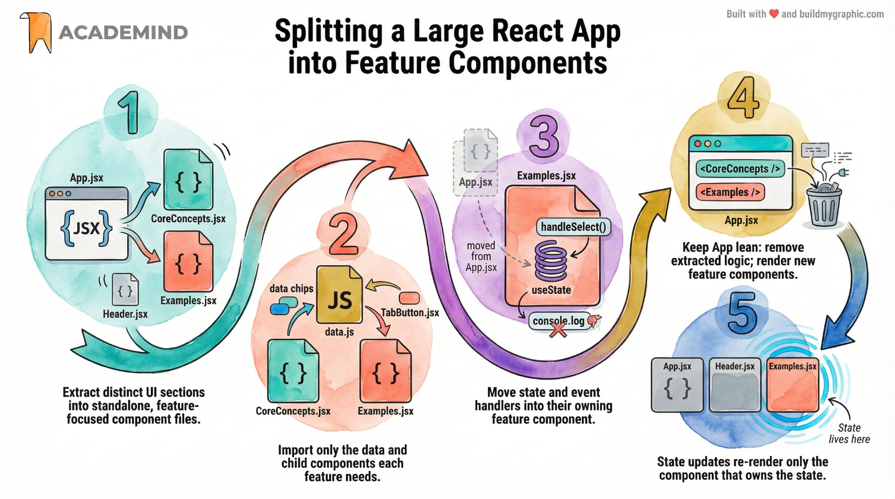
Forwarding Props with Rest & Spread
The problem with explicit prop pass-through
Imagine you are building a <Button> component that wraps a native
<button>. You want callers to be able to pass onClick,
disabled, className, aria-label, id,
data-testid, and any of the dozens of other attributes a button supports. The
naive approach is to declare each prop explicitly and forward it one at a time. This works for
three props. It collapses under its own weight at ten.
Rest + Spread: the transparent wrapper pattern
JavaScript's rest and spread operators solve this elegantly. Rest collects
leftover props into a single object using ...props in the parameter list.
Spread then expands that object back onto the target element using
{...props} in JSX. The wrapper becomes a transparent pipe: anything the caller
passes that the wrapper does not explicitly consume gets forwarded to the underlying DOM
element automatically.
Why prefer native prop names
A common temptation is to invent custom prop names like onSelect for a tab
button instead of using the native onClick. Resist this. When your component
accepts native prop names, callers do not need to learn a new API — they already know how
to pass onClick, disabled, and aria-label from their
HTML knowledge. Custom names force every consumer to read your documentation.
<TabButton onSelect={() => ...}>
Topic
</TabButton>
Caller must learn a new API per component.
<TabButton onClick={() => ...}>
Topic
</TabButton>
Caller reuses DOM knowledge; works with rest/spread.
Reference diagram
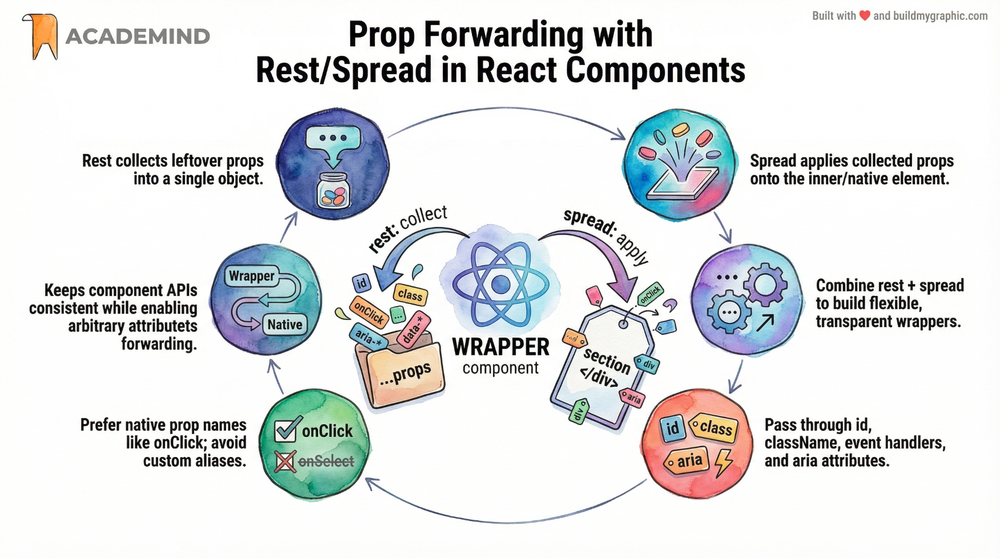
Multiple Slots — children & Named Props
Why one slot is not enough
The children prop is React's built-in mechanism for "whatever you nest between
the opening and closing tag". It is perfect for simple wrappers like a Card or a Button.
But many UI patterns need multiple insertion points. A tabs component needs
a slot for the menu and a separate slot for the content. A dialog needs slots for header,
body, and footer. A layout needs slots for sidebar and main.
The trick is that any prop can hold JSX, not just children.
If you accept a prop called menu and render it with {menu}, the
caller can pass arbitrary JSX into that slot. This is the "named slots" pattern, borrowed
from Web Components and Vue.
Building a Tabs component with two slots
Separate structure from behaviour
Notice that the Tabs wrapper above has no state. It does not know which tab is
active, it does not handle clicks, and it does not switch content. Its only job is to enforce
the layout — menu above, content below. The parent component owns the active-tab state and
the click handlers. This separation is what makes the wrapper reusable: the same
<Tabs> component can be used for a tabbed settings panel, a tabbed code
editor, or a tabbed product page, because none of the tab-specific logic lives inside it.
useState to a wrapper, ask whether that state really
belongs there or in the caller.
Scaling to more than two slots
The named-slot pattern scales to any number of slots. A dialog might accept
header, body, and footer props. A page layout might
accept sidebar, main, and toolbar. The rule of thumb:
once you have more than three slots, consider whether the wrapper is doing too much, or
whether nested wrappers would be clearer.
Reference diagram
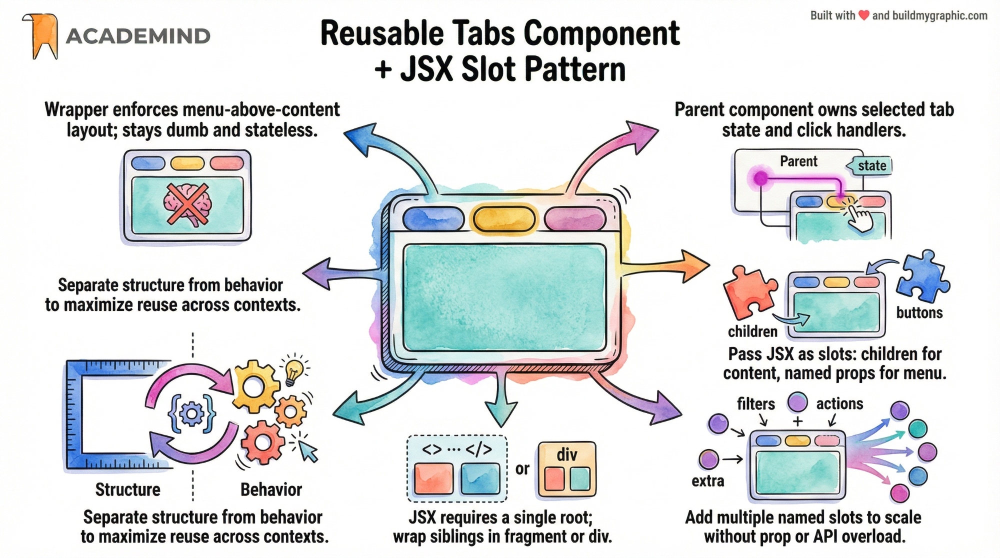
buttons for the menu, children for the content.Choosing Component Types Dynamically
The flexibility problem
Sometimes you want a wrapper component to render different HTML elements depending
on context. A button group might render as a <div> in a toolbar, a
<menu> in a navigation bar, or a <ul> in a sidebar.
Hard-coding the element inside the wrapper forces the caller to choose between "one component
per element type" (boilerplate) or "always a div" (semantically wrong).
The dynamic wrapper prop pattern
The fix is to let the caller pass the wrapper element as a prop. The trick is that React
treats lowercase strings ("div") as native HTML tags and capitalized identifiers
(Section) as custom components. So you can write:
<menu> is HTML.
<Menu> is a component. <Section /> would not work
if the receiving variable were lowercase. That is why we reassign to a capitalized local
(const ButtonsContainer = buttonsContainer) before using it in JSX. Skip this
step and React will try to render <buttonsContainer> as a custom HTML
tag, which silently renders nothing.
Reference diagram
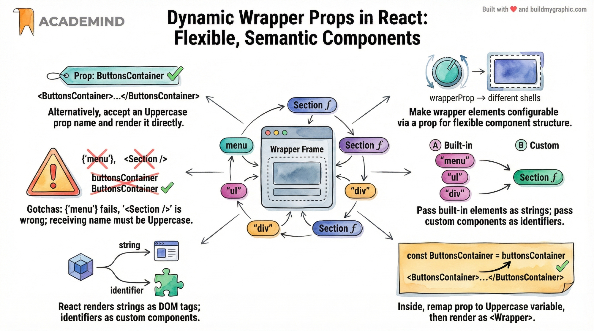
Real project: polymorphic Button
A common production pattern is a polymorphic Button that can render as a
<button>, an <a>, or a Next.js <Link>
depending on whether the action is a click handler, an external link, or a client-side
navigation. The same dynamic-wrapper technique handles all three:
Default Prop Values via Destructuring
Why defaults matter
A reusable component is only as reusable as its defaults are sensible. If callers must pass
every prop every time, the API is exhausting to use. Defaults let the caller specify only
what they want to override, while the component fills in the rest with reasonable choices.
The previous chapter already showed defaults in passing (as = 'button'); this
chapter formalises the pattern.
Destructuring defaults — the modern way
The idiomatic React way to set a default is with JavaScript's destructuring default syntax
in the function parameter list. If the caller omits the prop (or passes undefined),
the default kicks in. If the caller passes a value, that value wins.
Defaults work for any JavaScript value
The destructuring default is not limited to primitives. You can default to a string
('div'), a function (() => {}), a component reference, an array,
an object, or even null. This flexibility is what makes the pattern so
powerful: the same syntax covers every prop type.
| Prop type | Default syntax | Use case |
|---|---|---|
| String | as = 'div' | Polymorphic element type |
| Number | size = 16 | Spacing, font size |
| Boolean | disabled = false | Toggles |
| Function | onClick = () => {} | No-op handler (avoids undefined crash) |
| Array | items = [] | Empty list initial state |
| Object | style = {} | Style overrides |
| Component | icon = DefaultIcon | Swappable icon |
undefined. If the caller
explicitly passes null, the default does not apply — the prop
becomes null. This bites you when you write
{ title && <h2>{title}</h2> } and someone passes
title={null}: the guard works (null is falsy), but if you had
written {title.length > 0 && ...} you would crash.
Reference diagram
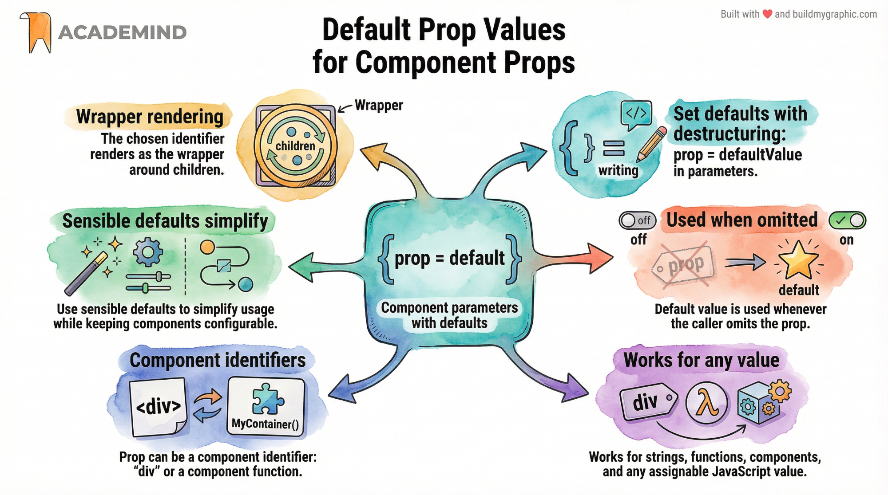
{ prop = default } in the parameter list; default is used when caller omits the prop.Static Content & Component Instances
Not every byte of your UI belongs inside React. Some markup is genuinely static and putting it through the React render cycle adds cost without benefit. And once you do have components in the tree, you need to understand that each usage is an isolated instance — a fact that beginners often misunderstand and that has surprising consequences for state, performance, and design.
Not All Content Belongs in React
The index.html file is still there
When you start with React, it is easy to assume that everything visible on the page
is rendered by your components. That is not true. Every React app has an
index.html (Next.js calls it a layout, Vite calls it index.html,
CRA called it public/index.html) that contains the bare HTML skeleton — the
<!DOCTYPE>, the <head>, and a single
<div id="root"> where React mounts. Anything you put in
index.html above or outside that root div is rendered by the
browser as plain HTML, before React runs and outside React's control.
When to put markup in index.html
Use index.html for content that is truly static — content that never changes for
the entire lifetime of the page and that does not need to react to user interaction. The
canonical example is a global site header (logo, navigation, search bar) that should appear
on every page and does not need React's state or props. Putting this header in
index.html means it renders instantly on first paint, before React has even
loaded, which improves perceived performance.
The public folder — assets served at the root
Static assets that you reference by URL — favicons, robots.txt, Open Graph images, fonts,
PDFs — go in the public folder. The build tool serves public at the
site root, so a file at public/game-logo.png is referenced as
/game-logo.png in your HTML, not as
/public/game-logo.png. Including the public/ prefix in the URL is
a common beginner mistake that produces a 404.
<img src="/public/game-logo.png" />
Returns 404 — the public/ prefix must be omitted.
<img src="/game-logo.png" />
The build tool maps this to public/game-logo.png.
When to import assets instead
There is a second way to handle images in React: import them as ES modules. This is the right choice when the image is part of a component's UI and you want the build tool to hash, optimise, and bundle it. Imported images get a content-hashed URL that busts the browser cache automatically when the file changes.
Reference diagram
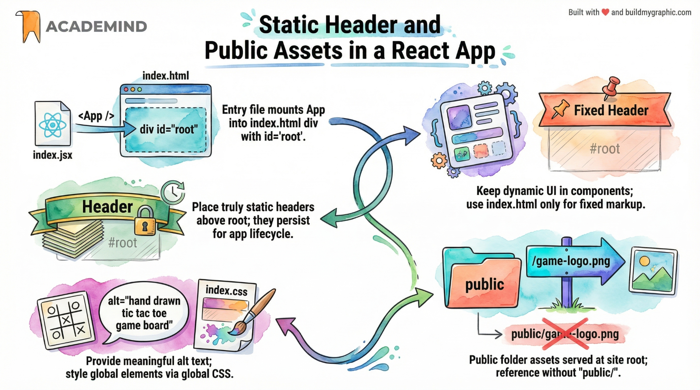
#root; public assets are referenced without the public/ prefix.index.html. If yes, it belongs in a React component. When
in doubt, put it in a component — the cost of moving it later is low, but a static header in
index.html cannot be made interactive without rewriting it.
Component Instances Work in Isolation
Components vs instances — the crucial distinction
A component is a function — a blueprint, a recipe. An instance
is what React creates when it actually renders that function somewhere in the tree. If you
call <Counter /> three times in your JSX, you have one Counter component
but three Counter instances. Each instance has its own state, its own props, its own event
handlers, and its own place in the React tree. They do not share anything by default.
This is the most misunderstood fact in all of React. Beginners assume that because all three Counters come from the same function, they must be connected — that changing one will change the others. The opposite is true. Each instance is a sealed box. React deliberately isolates them so that you can reuse a component without worrying about side effects leaking between usages.
Demonstrating isolation with code
Click instance A and only A's number goes up. B and C are unaffected. Each button has its
own count variable in memory, its own setter, and its own click handler closure.
The fact that they share a function definition is irrelevant — they are independent objects
at runtime.
Why isolation matters
Isolation is what makes components reusable. You can drop the same
Counter into a sidebar, a header, and a footer, and they will each work
independently without you writing any extra code to keep them apart. If they shared state by
default, every reusable component would need explicit "namespace" or "scope" props to avoid
collisions — which would defeat the entire point of reuse.
Reference diagram
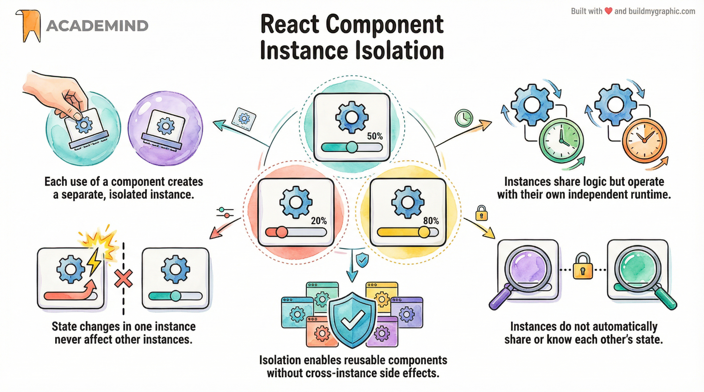
State Management Deep Dive
State is where React apps live or die. The next five chapters cover the patterns that experienced React developers use to keep state correct, fast, and maintainable: functional updaters for batched state, controlled inputs with two-way binding, immutable updates for nested data, lifting state to share it between siblings, and — most importantly — recognising when you have too much state and need to consolidate.
Functional Updaters — Updating State from Old State
The stale-state bug
The single most common state bug in React looks like this: you have a boolean flag, you flip it twice in the same handler, and only one flip "takes". Or you increment a counter three times in a loop and the counter only goes up by one. The cause is not React being broken — it is React batching state updates for performance, and your update code reading the state variable from the render closure instead of from React's internal queue.
When you call setCount(count + 1), React does not immediately update the
count variable. It schedules an update for the next render. Until that render
happens, count in your closure still holds the old value. If you call
setCount(count + 1) three times in a row, all three calls read the same old
count, schedule the same target value, and you end up with a single increment.
The fix — functional updaters
When the new state depends on the previous state, you must use the functional updater form of the setter. Instead of passing the next value, you pass a function that receives the latest state from React's internal queue and returns the next value. React calls this function at update time, with the correct (chained) previous value — never the stale closure value.
When to use functional updaters
Use a functional updater whenever the next state depends on the previous state.
Toggling booleans, incrementing counters, appending to arrays, removing from arrays by index,
updating a property of an object — all of these depend on previous state and all need
functional updaters. Setting state to a brand-new value that does not depend on the previous
one (e.g. setName('Alice')) does not need a functional updater.
| Pattern | Depends on prev? | Use functional updater? |
|---|---|---|
setName('Alice') | No | No — direct value is fine |
setCount(count + 1) | Yes | Yes — use prev => prev + 1 |
setOpen(!open) | Yes | Yes — use prev => !prev |
setItems([...items, newItem]) | Yes | Yes — use prev => [...prev, newItem] |
setUser({...user, name: 'A'}) | Yes | Yes — use prev => ({...prev, name: 'A'}) |
Reference diagram
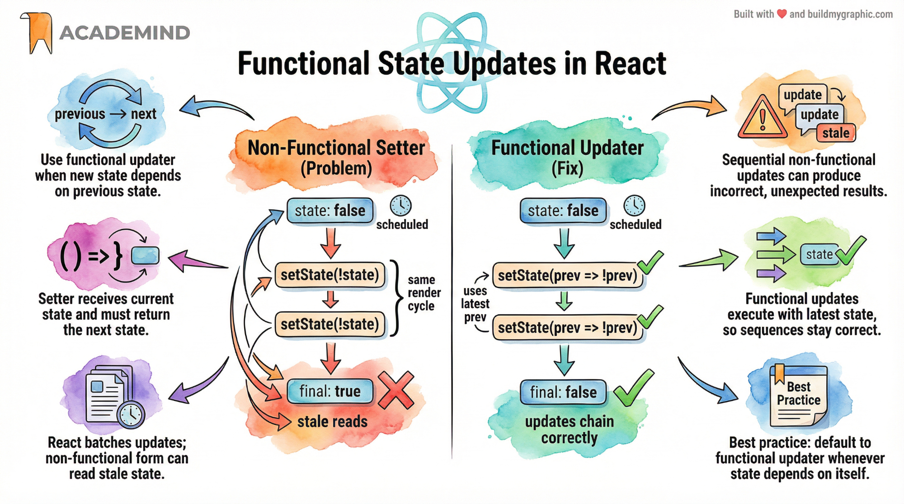
User Input & Two-Way Binding
Controlled vs uncontrolled inputs
HTML inputs have their own internal state — type in a text box and the browser updates the
box's value, no React required. This is called an uncontrolled input because
React does not control the value; the DOM does. You can read the value later via a ref or
via event.target.value on submit, but React's render output does not drive what
the box shows.
A controlled input is the opposite: the input's value prop is
bound to a piece of React state, and the onChange handler updates that state on
every keystroke. React state becomes the single source of truth for what the box displays.
If you call setName('Bob') programmatically, the input updates to show "Bob".
If you do not, the input cannot be changed by the user (because value always
reflects name, which has not changed).
<input defaultValue="Alice" />
DOM owns the value. React cannot programmatically change it. defaultValue sets the initial value only.
<input value={name} onChange={...} />
React state owns the value. Every keystroke flows through React. Programmatic updates Just Work.
The two-way binding loop
A controlled input creates a two-way data flow between React state and the DOM. The user
types into the box → the onChange event fires → the handler calls
setName(event.target.value) → React re-renders → the input's value
prop now reflects the new state → the box displays the new text. This loop is called
two-way binding, and it is the cornerstone of every form in React.
Why the loop matters
Two-way binding keeps the UI and state perfectly synchronised. This means you can validate on every keystroke, you can transform the value before display (e.g. uppercase), you can disable a submit button while the input is empty, and you can reset the form by clearing the state. None of this is possible with uncontrolled inputs, because the input's value lives in the DOM and React does not see it until submit.
value={name} without an onChange, React will warn you
in the console and the input will be read-only. React controls the value but has no way to
update it when the user types, so it refuses to let the user change it. Always pair
value with onChange for controlled inputs.
Reference diagram
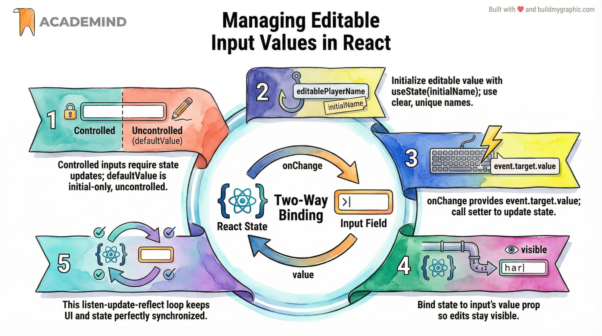
onChange updates state, value reflects state.Updating Object & Array State Immutably
Why React needs immutability
React decides whether to re-render by comparing the previous state value with the next one
using Object.is. If you mutate an object or array in place — for example,
user.name = 'Bob' — the reference is still the same object, so
Object.is(prevUser, user) returns true, and React skips the re-render. The
state has changed but React never finds out. The screen does not update. This is the most
common state bug after the stale-state bug from Chapter 10.
The fix is to treat state as immutable: never mutate the existing object; always create a new object (or array) that contains the updated values. React sees a new reference, knows the state changed, and re-renders. Immutability also enables time-travel debugging, optimistic UI, and React's concurrent rendering features — all of which compare snapshots of state by reference.
The 2D array case — Tic-Tac-Toe board
Nested data structures are where immutability gets tricky. A Tic-Tac-Toe board is a 2D array
of cells. To update one cell, you cannot just do board[r][c] = 'X' — that
mutates the inner array in place, and React will not see the change. You must create a new
outer array, with new inner arrays for the row that changed, leaving the other rows
untouched. The pattern is:
The immutable update cheat sheet
| Operation | Wrong (mutation) | Right (immutable) |
|---|---|---|
| Append to array | items.push(newItem) |
[...items, newItem] |
| Remove from array | items.splice(i, 1) |
items.filter((_, idx) => idx !== i) |
| Update array item | items[i].name = 'Bob' |
items.map((it, idx) => idx === i ? {...it, name: 'Bob'} : it) |
| Update object field | user.name = 'Bob' |
{...user, name: 'Bob'} |
| Update nested object | user.address.city = 'NYC' |
{...user, address: {...user.address, city: 'NYC'}} |
| Update 2D array cell | board[r][c] = 'X' |
board.map((row, ri) => ri === r ? row.map((cell, ci) => ci === c ? 'X' : cell) : row) |
Reference diagram
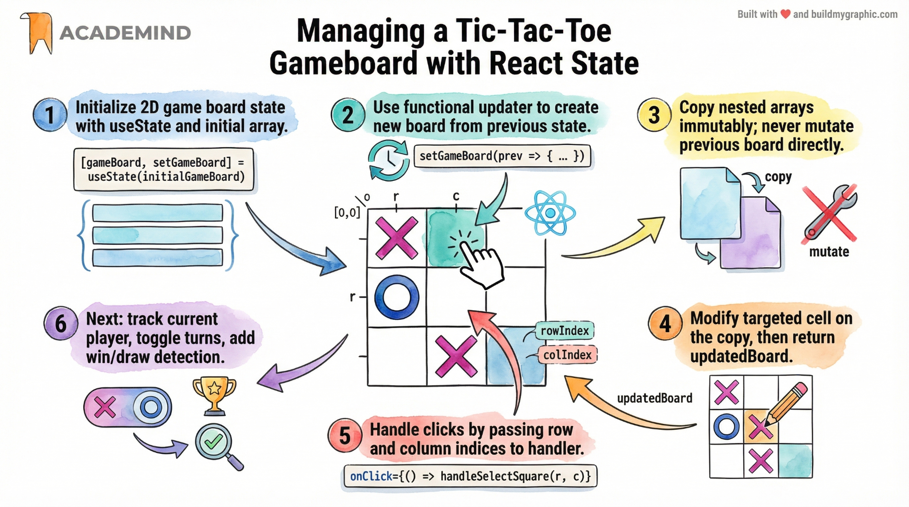
use-immer) which
let you write "mutating" code that is internally translated into immutable updates. Immer
is the same library Redux Toolkit uses under the hood. Most production React apps adopt it
once their state gets nested enough.
Lifting State Up to Share Between Siblings
The sibling communication problem
Recall from Chapter 9 that component instances are isolated. So what happens when two
sibling components need to share data? A common case: a Tic-Tac-Toe game has a
<GameBoard> component that captures clicks, and a separate
<PlayerInfo> sibling that highlights whose turn it is. The PlayerInfo
needs to know what the GameBoard just did. They cannot talk to each other directly — there
is no sibling-to-sibling prop channel.
The React answer is to lift the state up to the nearest common ancestor — usually the parent that renders both siblings. The parent owns the state and the update function, and passes them down as props: the state value goes to the component that displays it, and the update function goes to the component that triggers changes. Data flows down; actions flow up.
The lifted-state pattern in code
The mental model
Think of the parent as a "post office". Siblings do not deliver letters to each other
directly — they go through the post office. The GameBoard does not call
setActivePlayer directly; it calls onSelectSquare, which is a
function the parent passed down. The parent's handler updates the state, which triggers a
re-render of the parent, which passes the new state down to both siblings. The PlayerInfo
sees the new active player and highlights the correct card.
GameBoard and PlayerInfo need it, and they
share App as their parent, App is the right place. Do not push it up to a
grandparent that does not need it — that just creates extra prop-drilling for no benefit.
Reference diagram
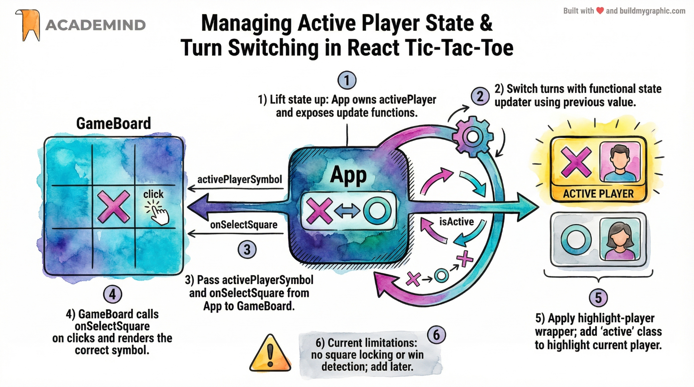
activePlayer; GameBoard calls up; PlayerInfo reads down.Avoid Multiple Intersecting States — One Source of Truth
The duplication trap
As apps grow, it is tempting to keep separate pieces of state for everything: a state for the game board, a state for the active player, a state for the move log, a state for the winner, a state for the turn count. Each piece of state feels natural in isolation, but together they create a maintenance nightmare. The same fact about the world is stored in multiple places, and you must keep them all in sync. The moment one update misses a synchronisation step, the UI shows inconsistent data and the bug is nearly impossible to track down.
The principle that prevents this is single source of truth: store each fact
about the world in exactly one place, and derive everything else from it. In a Tic-Tac-Toe
game, the only thing you actually need to store is the ordered list of moves
(gameTurns). The current board, the current player, the move log, and the
winner can all be derived from that one array. If you store them separately, you have five
states that must stay in sync; if you derive them, you have one state and four pure
computations.
The lifted-state vs duplicate-state comparison
gameBoard— 2D arrayactivePlayer— 'X' / 'O'gameTurns— array of moveshasWinner— boolean
Every click must update all four consistently. One miss = bug.
gameTurns— array of moves (the truth)- Board — derived via
for...ofloop - Active player — derived from
turns[0] - Winner — derived via win-line check
One update; everything else recomputes. No sync bugs possible.
Code: deriving the active player from turns
Reference diagram
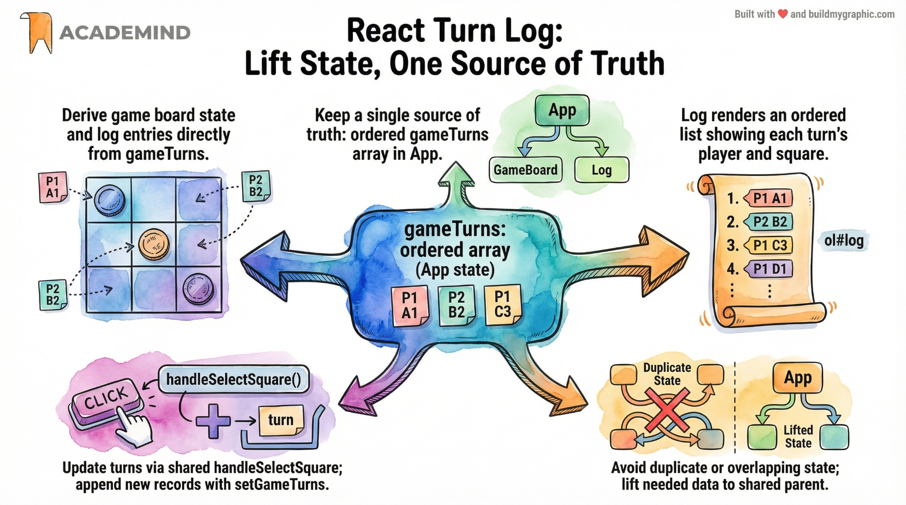
gameTurns); derive the board, the active player, and the log from it.Deriving State — The Smarter Pattern
Chapter 14 introduced the single-source-of-truth principle. The next four chapters expand on that idea by showing four concrete patterns for deriving values instead of storing them: avoid mixing state with state, derive state from props, share state across components, and lift computed values up. Master these and you will write React code that has half the state and twice the reliability of your peers.
Avoid Mixing State — Prefer Deriving
The active-player trap
In Chapter 13 we lifted activePlayer state up to App. That was the
right call at the time, because the board and the player info both needed it. But Chapter 14
introduced a better idea: store only gameTurns, and derive everything else. So
which is it — store activePlayer, or derive it?
The answer is: derive it. If you store both gameTurns and
activePlayer, you have to keep them in sync — every update to
gameTurns must also flip activePlayer, and any bug in that
synchronisation produces an inconsistent UI (e.g. the board thinks it is X's turn but the
player panel highlights O). If you derive activePlayer from
gameTurns[0] instead, there is nothing to keep in sync. The active player is
always a function of the turn history.
The turn object shape
To derive everything from a single array, the array elements need to be self-describing. Each turn records which square was played and which player played it:
Deriving the active player
Reference diagram
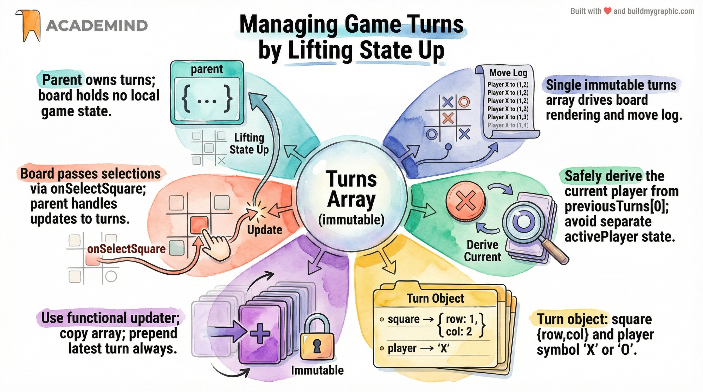
Deriving State from Props
From "board state" to "board derivation"
In Chapter 12 we stored the game board as a 2D array in useState. In Chapter 14
we said the only state should be gameTurns. So where does the board come from?
The answer is the natural conclusion of the single-source-of-truth principle: the
GameBoard component receives turns as a prop and derives
the 2D board from that array on every render. No useState in
GameBoard at all.
This is called "deriving state from props". The board is computed inside the render function
from the turns prop, using a plain for...of loop. Each render
rebuilds the board from scratch — which sounds expensive, but is actually cheap (a 9-cell
loop runs in microseconds) and eliminates an entire class of state-sync bugs.
The derivation code
Why this beats storing the board in state
Three reasons. First, there is no state-sync bug surface: the board is always a pure function
of the turns, so it can never disagree with the turn history. Second, undo and replay become
trivial — to undo, remove the latest turn; the board recomputes automatically. Third, the
component is simpler: no useState, no setGameBoard, no functional
updater, no immutability dance. The component receives data and renders it.
square.row and square.col values before indexing into
the board. A malformed turn with {row: undefined, col: undefined} will throw
cannot set properties of undefined and crash your render. Use a guard like
if (board[row] && board[row][col] !== undefined) before assigning.
Reference diagram
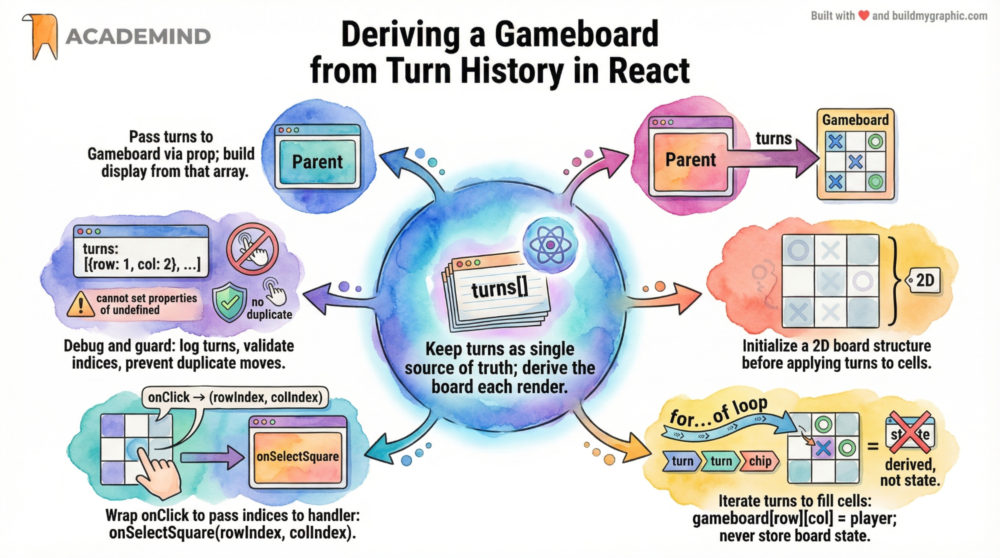
turns prop in; derived 2D board out. GameBoard has no internal state.Sharing the Same State with Multiple Components
One state, many UIs
The natural payoff of lifting state up and deriving everything is that multiple
components can render from the same state without any extra wiring. In the
Tic-Tac-Toe app, both the GameBoard and the Log receive the same
gameTurns prop. When the user clicks a square, gameTurns updates
once, both components re-render, and the board shows the new move while the log shows the
new entry. They stay synchronised by construction — there is no separate "log state" to
keep in sync with "board state".
The Log component
Why keys matter here
The key prop on list items must be unique and stable across renders. Using the
array index as the only key is a famous bug source — if an item is inserted at the front of
the list (which is exactly what happens when we prepend the newest turn), every existing
item's index shifts by one, and React reuses the wrong DOM nodes. The fix is to compose a
key from the data itself: {`${row}-${col}`} is unique per cell, and adding the
array index handles the (rare) case of repeated cell coordinates from undo/redo.
key={index}
Index shifts when items are prepended; React reuses wrong DOM nodes; state leaks between items.
key={`${row}-${col}`}
Stable per cell; React matches items by data, not by position.
Reference diagram
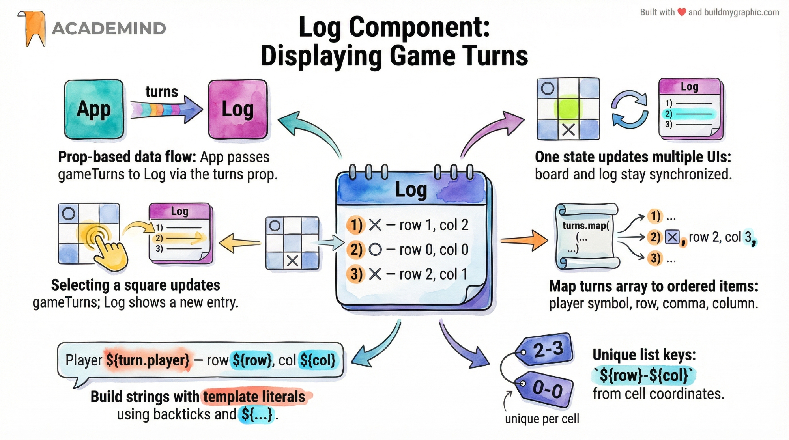
GameBoard and Log receive the same turns prop; one state, two views.Lifting a Computed Value Up
When the derived value is needed by multiple components
Sometimes a derived value is needed by more than one component. In Tic-Tac-Toe, the
winner needs to be checked by both the GameBoard (to stop
accepting clicks) and the PlayerInfo (to crown the winner) and possibly a
GameOver overlay (to show the result). If each component computes the winner
independently, you have duplicated logic. If you store hasWinner as state, you
reintroduce the synchronisation bug from Chapter 14.
The solution is to compute the derived value once, in the lowest common ancestor, and pass it down as a prop. This is "lifting a computed value up" — the same idea as lifting state up, but applied to a derived value rather than to user-driven state. The parent owns the computation; the children receive the result.
Computing the winner
Lifting the computation into App
Why this is "lifting a computed value" and not "lifting state"
The distinction is subtle but important. The winner is not state — it does not exist
independently, and the user does not change it directly. It is a pure function of the board
(which is itself a pure function of the turns). What we lifted is the computation,
not the storage. We could have computed the winner inside GameBoard, but then
PlayerInfo and GameOver would also need to compute it, duplicating
the logic. By computing it once in App and passing it down, every consumer sees
the same answer and the logic lives in one place.
Reference diagram
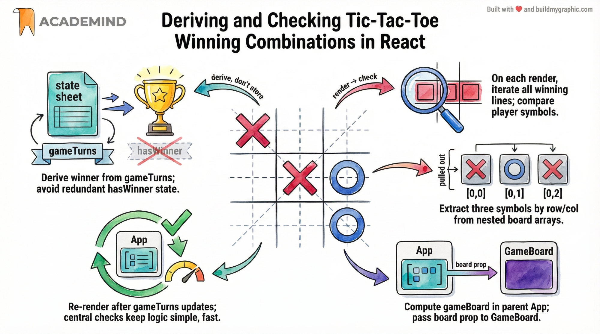
App derives gameBoard from gameTurns, then derives winner from gameBoard. Both flow down as props.useMemo so React only recomputes when the inputs change. For the
Tic-Tac-Toe winner check, the 8-line scan is cheap enough that useMemo is
overkill — recompute on every render is fine. Reach for useMemo only when a
profile shows the derivation is actually a bottleneck.
Capstone Project — Tic-Tac-Toe
The capstone project for this volume weaves together every pattern from Parts I–IV into a single working application: a Tic-Tac-Toe game with editable player names, a move log, win detection, and a game-over modal. Read this chapter as a review — every section references the chapter where the pattern was introduced, so you can flip back if a detail is fuzzy.
Building a Complete Tic-Tac-Toe Game
Project structure
Following the feature-based split from Chapter 3, the project is organised into focused
component files. Each file owns one concern; App.jsx is a thin coordinator that
owns the shared state and derives everything else.
| File | Responsibility | Owns state? |
|---|---|---|
App.jsx | Layout, owns gameTurns & players, derives board + winner | Yes (2 states only) |
PlayerInfo.jsx | Editable player names, active-player highlight, winner badge | Local edit-mode flag |
GameBoard.jsx | 3x3 grid, receives board prop, calls onSelectSquare | None — fully derived |
Log.jsx | Ordered list of moves, formatted with template literals | None |
GameOver.jsx | Modal overlay, shows winner or draw, restart button | None |
winner.js | Pure functions: deriveGameBoard, deriveWinner, deriveActivePlayer | N/A (pure logic) |
Step 1 — App owns the two pieces of state
Per Chapter 14, the only state App owns is the move list and the player names.
Everything else (board, active player, winner, draw) is derived. The handler guards against
clicks on taken squares or after a win.
Step 2 — GameBoard receives a derived board
Per Chapter 16, GameBoard has zero internal state. It receives a 2D board array
as a prop and a callback for square clicks. It maps the board to buttons, disables taken
squares, and calls the callback with row/column indices.
Step 3 — PlayerInfo with editable names (two-way binding)
Per Chapter 11, the player name input uses two-way binding. The component owns a local
isEditing flag for the edit mode toggle (Chapter 10 — functional updater), and
receives the player name as a prop. When the user clicks Save, the new name is sent up to
App via the onRename callback prop.
Step 4 — Log shows the move history
Per Chapter 17, the Log receives the same turns array as a prop and renders an
ordered list. Stable composite keys prevent React from reusing wrong DOM nodes when new turns
are prepended.
Step 5 — GameOver overlay
The overlay is conditionally rendered when there is a winner or a draw (Chapter 18). It
receives the winner object and a restart callback; restart clears gameTurns
which causes every derived value to recompute to the empty state.
Step 6 — Pure logic module
All derivation lives in a plain JavaScript module, separate from any component. This makes the logic trivially unit-testable without rendering any React.
Interview Q&A
The following twenty questions cover the patterns from this volume. They are the questions that come up in real React interviews at every level — junior to senior. Try to answer each one aloud before reading the answer; if you can answer all twenty without notes, you are ready for any React interview.
20 Essential React Interview Questions
React.createElement(), which is a function call — and a function can only return one value. Multiple top-level siblings would compile to two function calls with no wrapper, which is a syntax error. The fix is to wrap them in a real DOM element (which adds an extra DOM node) or, preferably, in a React Fragment (<>...</> or <Fragment>...</Fragment>) which groups siblings without adding a DOM node.<Fragment> form instead of the <> shorthand?key when rendering a list of fragments inside .map(). The shorthand <> accepts no attributes, so trying to put a key on it is a syntax error. The explicit form lets you write <Fragment key={id}>...</Fragment>....rest and spread them onto the underlying element with {...rest}. This makes the wrapper transparent — any prop the caller passes that the wrapper does not consume is forwarded automatically. Use it for any wrapper that wraps a native element (Button, Input, Card) so callers can pass arbitrary HTML attributes without you having to declare each one.children?buttons, header, footer) and render them inside the component with {buttons}. The caller passes JSX into each slot. This is the "named slots" pattern, borrowed from Web Components and Vue.buttonsContainer = 'menu') and reassign it to a capitalized local (const ButtonsContainer = buttonsContainer) before using it in JSX. The capitalization is required because JSX uses the case of the first letter to decide between native HTML tags (lowercase) and custom components (capitalized). Without the reassignment, <buttonsContainer> would be treated as a custom HTML tag and render nothing.null?function Card({ size = 16, ... }). The default applies when the prop is undefined (omitted). The gotcha: defaults do not apply when the caller explicitly passes null — the prop becomes null, not the default. Always write defensive code that handles null separately.index.html instead of a React component?index.html means it renders before React loads, improving perceived performance. Anything dynamic belongs in a component.<Counter /> in your JSX produces a separate instance with its own state, props, and event handlers. Instances never share state by default — that isolation is what makes components reusable. If you need shared state, lift it to a common parent or use Context.setState(state + 1) multiple times in the same handler only applies the update once, because all calls read the same stale closure value of state (React batches updates and does not update the variable between calls). The fix is to use the functional updater form: setState(prev => prev + 1). React calls the function at update time with the latest value from its internal queue, so chained updates apply correctly.setName('Alice'). When in doubt, use the functional form — it is always safe.value prop is bound to React state, and an onChange handler updates that state on every keystroke — React is the single source of truth for what the box shows. An uncontrolled input manages its own value in the DOM; you set an initial value with defaultValue and read the current value via a ref or event.target.value on submit. Controlled inputs enable validation, transformation, and programmatic updates; uncontrolled inputs are simpler but limited.Object.is. If you mutate in place, the reference is unchanged, Object.is returns true, and React skips the re-render — the state changed but the UI never updates. Immutability (always creating a new object/array) ensures React sees a new reference and re-renders. It also enables time-travel debugging and React's concurrent features.board[r][c] = 'X' — that mutates the inner array in place. Instead, map over the outer array; for the row that changed, return a new array mapped from the old one with the target cell replaced; for other rows, return the original. The pattern is board.map((row, ri) => ri === r ? row.map((cell, ci) => ci === c ? 'X' : cell) : row).useMemo only when a profile shows the derivation is genuinely expensive.key often a bad idea?id field, or a composite key like {`${row}-${col}`}.GameBoard have no useState?turns prop. Each render rebuilds the 2D board from the ordered list of moves using a for...of loop. This eliminates an entire class of state-sync bugs (the board can never disagree with the turn history), simplifies the component (no setter, no functional updater, no immutability dance), and makes undo/replay trivial — remove a turn and the board recomputes automatically.